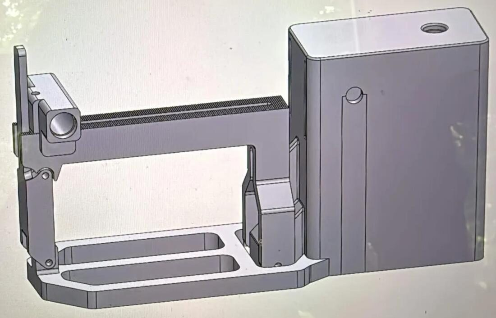

Ce que j’ai dirigé, conçu et construit.What I’ve led, designed and built.
Projets industrielsIndustry projects
Alaska Airlines · 2026Alaska Airlines · 2026
Banc d’essai pour MPIC de simulateurs de volFlight simulator MPIC test bench
Conception, sourcing et fabrication d’un banc d’essai pour les MPIC (cartes d’interface) des simulateurs : mises à jour plus rapides et maintenance possible en période d’exploitation, avec un impact minimal sur les systèmes réels. Fiabilité > 98,5 % sur 18 simulateurs.Designed, sourced and built a test bench for flight simulator MPICs (interface computers): faster updates and maintenance during operating hours, with minimal impact on live simulator systems. Reliability > 98.5% across 18 simulators.
UW Solar Vehicle Team · 2025–2026UW Solar Vehicle Team · 2025–2026
Direction & suspension de la voiture solaireSolar car steering & suspension
Mon projet dans l’équipe, conçu de A à Z : direction complète (crémaillère, rallonges, biellettes, supports) sous SolidWorks, analyses de charge et dynamiques (Ansys) et pièces de suspension imprimées en 3D.My project on the team, designed end to end: full steering assembly (rack and pinion, extenders, tie rods, brackets) in SolidWorks, load and dynamic analysis (Ansys) and 3D-printed suspension parts.
Projets personnels et universitairesPersonal & university projects
Amortisseur à fluide qui récupère l’énergie de la suspension d’une voiture : modélisation 3D, calculs de forces, vibrations et hydraulique, usinage des fixations et capots. Coordination technique de l’équipe.Fluid damper that recovers a car suspension’s energy: 3D modeling, force, vibration and hydraulic calculations, machining of mounts and end caps. Technical coordination of the team.

RC Discharger · 2026RC Discharger · 2026
Banc de rodage RCRC break-in bench
Système de réglage et de serrage précis conçu sous SolidWorks pour l’entreprise RC Discharger. Prototypes imprimés en 3D, tests dynamiques, puis lancement de la production.Precision adjustment and clamping system designed in SolidWorks for the company RC Discharger. 3D-printed prototypes, dynamic tests, then production launch.
Porte à poulies avec rail de guidage rotatif pour réduire l’encombrement à l’ouverture. Cadre en bois découpé au laser, panneaux imprimés en 3D, moteur piloté par un microcontrôleur STM32.Pulley-based door with a rotating guide track to shrink its footprint when open. Laser-cut wooden frame, 3D-printed panels, motor driven by an STM32 microcontroller.
Projet perso · 2025Personal project · 2025
Transmission à crabots, deux rapportsTwo-gear dog-clutch transmission
Étude des normes d’engrenages, des synchroniseurs, des pignons hélicoïdaux et des manchons à crabots, puis modélisation SolidWorks. Crabots imprimés en 3D pour valider les tolérances.Research on gear standards, synchronizer rings, helical gears and dog-clutch sleeves, then SolidWorks modeling. 3D-printed dog teeth to validate tolerances.
Maquette 3D du MI79 (RER B)3D model of the MI79 (RER B)
Reconstruction de l’extérieur du MI79 (motrice et remorque) sous SolidWorks, à partir de proportions tirées de photos et vidéos, en autonomie. Rails et roues commencés mais inachevés : à reprendre plus tard.Exterior of the MI79 (motor car and trailer) rebuilt in SolidWorks from proportions taken from photos and videos, fully on my own. Track and wheels started but unfinished: to be picked up again later.
University of Washington · 2025University of Washington · 2025
Asservissement d’un moteur DCDC motor control
Modèle d’un moteur à charge inertielle, contrôleurs proportionnel et à avance de phase (dépassement < 10 %, réponse < 3 s) implémentés sur NI myRIO. Essais proches des simulations.Model of a DC motor with inertial load, proportional and phase-lead controllers (overshoot < 10%, settling < 3 s) implemented on NI myRIO. Experiments close to simulations.